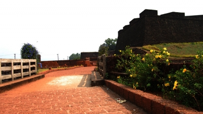

Kannur is one among the northernmost districts in the south western state of Kerala in India. The old name 'Cannanore' is the anglicised form of the Malayalam word Kannur. Kannur might have derived its name from one of the the Hindu diety, Kannan (Lord Krishna) and Ur (place) making it the place of Lord Krishna. The deity of the Katalayi Sreekrishna temple was earlier situated in a shrine at Katalayi Kotta in the south eastern part of the Kannur town.
location
Muzhuppilangad Beach gathers its fame as the only drive-in beach in India as well as in Asia. Lying 8 km away from Thalassery and 16 km away from Kannur town, the beach is easily accessible by road. Located parallel to NH 17 that connects Thalassery and Kannur, this beach is frequented by thousands of people every year and is an ideal location for one day tours and family picnics.
location
Fort St. Angelo, popularly known as Kannur Kotta or Kannur Fort is located at a distance of 3 km from the town of Kannur. The fort offers excellent vista of the surrounding regions as it lies facing the roaring waves of the Arabian Sea.
location
Pythal Mala, also known as Vaital Mala, is a scenic hill station located on the Kerala-Karnataka border and can be reached by travelling about 60 km from Kannur town. Situated at an altitude of 4,500 ft and surrounded by emerald mountain ranges, this hilly terrain invites travellers to enjoy and explore.